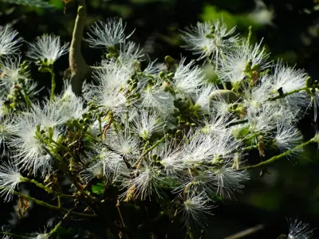

pranet · 出典付きの植物図鑑
南洋楹
Falcataria falcata (L.) Greuter & R.Rankin · Fabaceae

Falcataria falcata, commonly known as the Moluccan albizia, is a species of fast-growing tree in the family Fabaceae. It is native to the Maluku Islands, New Guinea, the Bismarck Archipelago, and the Solomon Islands. It is cultivated for timber throughout South Asian and Southeast Asian countries. This tree is considered to be invasive in Hawaii, American Samoa and several other island nations in the Pacific and Indian Oceans. It reaches about 30 m (100 ft) tall in nature, and has a massive trunk and an open crown. It is most famous for its remarkable rate of growth. It has been recorded growing 16 m (52 ft) in three years, 33 m (108 ft) in nine years and 45 m (148 ft) in seventeen years.
出典: Wikipedia 英語版「Falcataria falcata」 · CC BY-SA 4.0
異名: Adenanthera falcata L., Adenanthera falcataria L., Adenanthera falcatoria L., Albizia eymae Fosberg, Albizia falcata (L.) Backer, Albizia falcata (L.) Backer ex Merr., Albizia falcataria (L.) Fosberg, Albizia falcatoria (L.) Fosberg, Albizia fulva C.T.White & Francis, Albizia fulva C.T.White & W.D.Francis ex Lane-Poole, Albizia moluccana Miq., Falcataria moluccana (Miq.) Barneby & J.W.Grimes, Paraserianthes falcataria (L.) I.C.Nielsen, Paraserianthes falcatoria (L.) I.C.Nielsen, Pithecellobium falcatum (L.) Kosterm.
同定や利用は自己責任でお願いします。この図鑑だけを根拠に野生の植物を食べないでください。
出典
- 学名: World Flora Online Plant List 2026-06 · CC0 1.0
- 名前: Wikipedia の記事名と Wikidata · CC0 1.0（Wikidata）。記事名は事実
- 説明: Wikipedia 英語版「Falcataria falcata」 · CC BY-SA 4.0
- 食用・毒性: World Checklist of Useful Plant Species (Diazgranados et al. 2020, RBG Kew) · CC BY 4.0
- 分布: World Checklist of Vascular Plants (WCVP), RBG Kew, version 2026-06-04 · CC BY 3.0
このページは pranet のデータから自動生成しています。コードは MIT、データは項目ごとのライセンス（説明）。